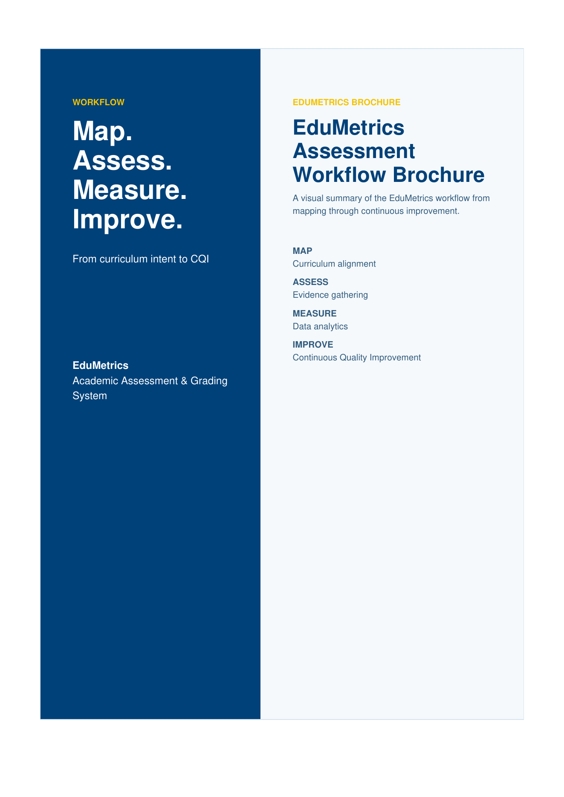
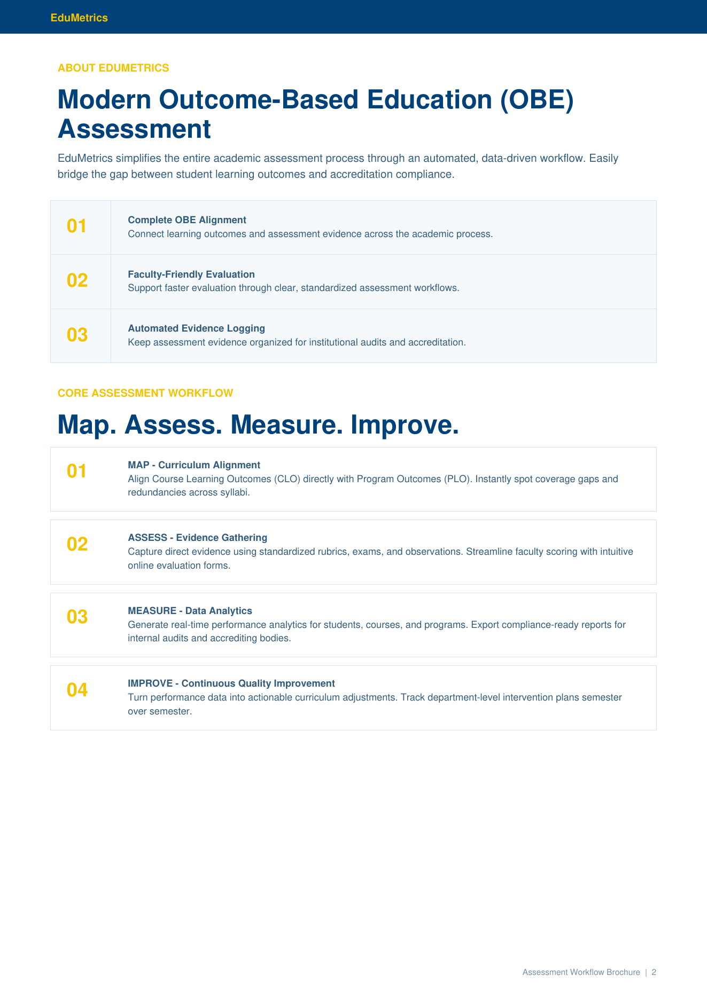
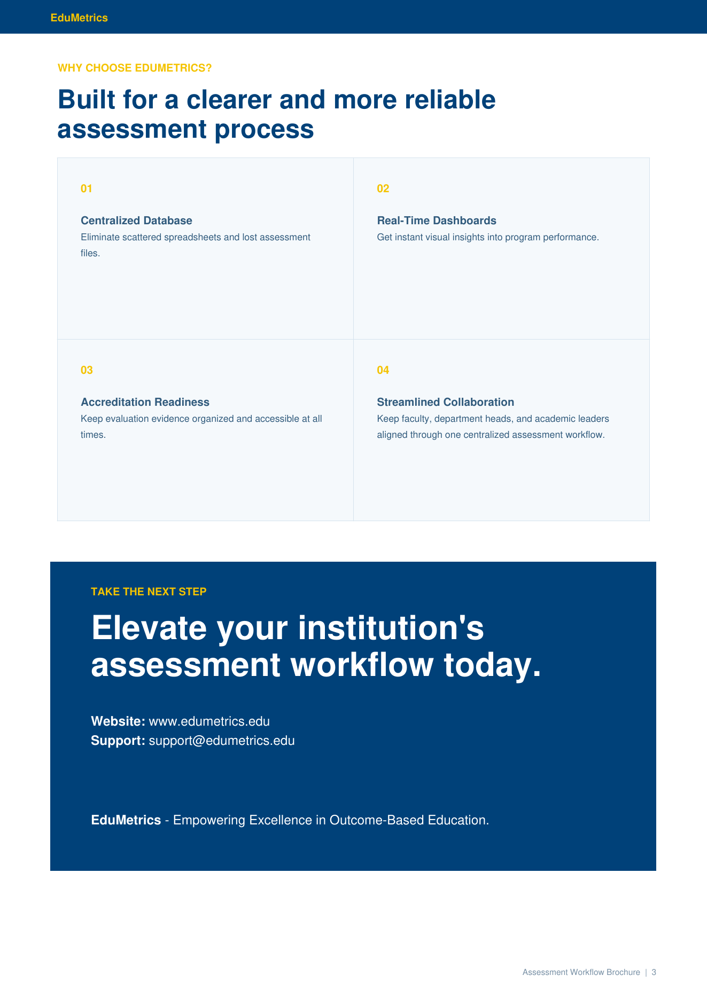

Complete OBE Alignment
Support complete Outcome-Based Education alignment throughout the academic assessment process.
Academic Assessment & Grading System
A visual summary of the EduMetrics workflow from mapping through continuous improvement.

Brochure PreviewEduMetrics simplifies the entire academic assessment process through an automated, data-driven workflow. Easily bridge the gap between student learning outcomes and accreditation compliance.
Support complete Outcome-Based Education alignment throughout the academic assessment process.
Provide a faculty-friendly interface designed to make academic evaluation faster and easier.
Organize and preserve assessment evidence to support institutional audits and accreditation activities.
Align Course Learning Outcomes (CLO) directly with Program Outcomes (PLO). Instantly spot coverage gaps and redundancies across syllabi.
Capture direct evidence using standardized rubrics, exams, and observations. Streamline faculty scoring with intuitive online evaluation forms.
Generate real-time performance analytics for students, courses, and programs. Export compliance-ready reports for internal audits and accrediting bodies.
Turn performance data into actionable curriculum adjustments. Track department-level intervention plans semester over semester.
Eliminate scattered spreadsheets and lost assessment files.
Get instant visual insights into program performance.
Keep evaluation evidence organized and accessible at all times.
Keep faculty, department heads, and academic leaders aligned through one centralized assessment workflow.
Website: www.edumetrics.edu
Support: support@edumetrics.edu
EduMetrics — Empowering Excellence in Outcome-Based Education.


PDF • Workflow Brochure • EduMetrics